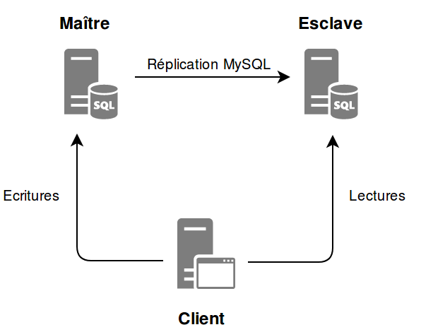

Bienvenue !
Pierre-Julien VILLOUD

Introduction
MySQL est un système de gestion de bases de données relationnelles. Il reste le deuxième SGBDR le plus utilisé au monde (derrière Oracle et devant SQL Server) même s'il est en perte de vitesse.

MySQL est un logiciel libre et open source, mais distribué sous double license (GPL et propriétaire).
Historique
- Créé par Michael Widenius en 1995
- Version 4 en 2004
(sous-requêtes et prepared statements) - Version 5 en 2005
(curseurs, procédures stockées, triggers, vues) - Racheté par Sun Microsystems en 2008
- Oracle rachète Sun en 2010
- Version 5.7 en 2015
(dernière mise à jour le 17/07/2017)
Avantages de MySQL
- Communauté
- Open Source...
- Orienté Web, Cloud, Big Data
- Solidité et fiabilité
- Supports OS
Inconvénients de MySQL
- Open Source ?
- Fonctionnalités
- De grands noms quittent MySQL
- Syntaxe
- Avenir incertain
Principe du client - serveur
MySQL, comme beaucoup de SGBDR, repose sur le principe du client - serveur. La base de données à proprement parler est installée sur un serveur. Afin de communiquer ou d'interragir avec ce serveur, il est nécessaire de passer par un logiciel client.

Bien que ce soit souvent le cas dans les applications en entreprise, il n'est pas nécessaire que le client soit installé sur une machine différente de celle du serveur. Il peut bien évidemment avoir plusieurs clients qui accèdent à un même serveur.
Vocabulaire
Un peu de vocabulaire est nécessaire lorsqu'on parle de SGBDR.
- Base de données
- Schéma
- Table
- Colonne
- Ligne
- Requêtes
- Contraintes
Installation
MySQL est disponible pour de nombreux systèmes d'exploitation. Nous verrons l'installation sous Windows et Linux.
Windows
Pour installer le serveur, l'installeur MySQL est recommandé.
Installer le client MySQL Workbench en téléchargeant l'installeur ici.
Linux (console)
Exécuter la commande suivante dans une console de votre VM Linux
sudo apt-get install mysql-server mysql-client
Ça y'est un serveur MySQL et un client en ligne de commande sont installés sur votre VM Linux, et un client graphique est installé sur votre VM Windows !
Le serveur
Une fois MySQL installé, il est possible d'interragir avec le serveur avec le script
/etc/init.d/mysql (sous Linux) et via un service (sous Windows).
/etc/init.d/mysql start|stop|restart|reload|force-reload|status
+ R 'services.msc'
Le script Linux et le service Windows interagissent en fait avec le programme
mysqld qui représente le serveur en lui-même et permet de le démarrer avec des options particulières. Pour avoir la liste de toutes les options et des variables configurables :
mysqld --verbose --help
mysqld --var_name=value
Pour voir les valeurs des variables de votre serveur ou des informations sur le statut ou les statistiques, vous pouvez exécuter les commandes SQL suivantes si vous êtes connectés au serveur :
SHOW VARIABLES;
SHOW STATUS;
SET GLOBAL max_connections = 1000;
SET SESSION sql_mode = 'TRADITIONAL';
Il est également possible d'utiliser la commande
mysqladmin. Par défaut, les valeurs des variables sont prises dans le fichier /etc/mysql/my.cnf sous Linux et my.ini sous Windows ou directement dans l'exécutable depuis la version 5.7.18.
mysqladmin variables
mysqladmin extended-statusLe répertoire data
Ce répertoire contient les informations gérées par le serveur, des fichiers de logs et un sous-répertoire par base de données contenues dans le serveur. Sous Linux, il est situé dans le répertoire
/var/lib/mysql/
ls -al /var/lib/mysql
-rw-rw---- 1 mysql mysql 16384 oct. 25 21:16 aria_log.00000001
-rw-rw---- 1 mysql mysql 52 oct. 25 21:16 aria_log_control
-rw-r--r-- 1 root root 0 août 16 15:51 debian-5.5.flag
drwx------ 2 mysql mysql 4096 oct. 20 15:11 entreprise
-rw-rw---- 1 mysql mysql 44040192 oct. 25 21:16 ibdata1
-rw-rw---- 1 mysql mysql 5242880 oct. 26 10:00 ib_logfile0
-rw-rw---- 1 mysql mysql 5242880 oct. 26 10:00 ib_logfile1
drwx------ 2 mysql mysql 4096 août 16 15:51 mysql
-rw-rw---- 1 mysql mysql 14 août 16 15:51 mysql_upgrade_info
drwx------ 2 mysql mysql 4096 août 16 15:51 performance_schema
ls -al /var/lib/mysql/entreprise
-rw-rw---- 1 mysql mysql 61 oct. 19 09:05 db.opt
-rw-rw---- 1 mysql mysql 8822 oct. 19 09:05 Employe.frm
-rw-rw---- 1 mysql mysql 8600 oct. 19 16:59 Manager.frm
-rw-rw---- 1 mysql mysql 8630 oct. 19 16:59 Technicien.frm
Les données des tables sont stockées dans un fichier dédié.
La base système mysql
Cette base contient les tables qui stockent les informations nécessaires au serveur MySQL.
- La gestion des droits
- Les objets stockés dans la base
- La journalisation
- La réplication
- L'optimisation
- ...
Les logs
Par défaut les logs sont desactivés. Lorsqu'ils sont activés, ils sont stockés dans le répertoire
data sous forme de fichiers ou peuvent être stockées dans des tables de la base mysql.
| Type de log | Informations | Activation |
|---|---|---|
| Error log | Les problèmes rencontrés lors du démarrage, de l'arrêt ou du lancement de mysqld | Activé par défaut sur Windows, voir variable log_error |
| General query log | Les connexions client et les requêtes reçues de ces clients | Variables general_log_file et general_log |
| Binary log | Les requêtes effectuant des modifications sur les données (aussi utilisés pour la réplication) | Variable log-bin |
| Slow query log | Les requêtes qui ont pris plus de
long_query_time secondes à s'exécuter
|
Variables log_slow_queries, long_query_time et log-queries-not-using-indexes |
Il est nécessaire de redémarrer le serveur lorsque ces changements sont faits au niveau du fichier de configuration. Il est également possible pour certaines variables de les définir sans avoir besoin de redémarrer le serveur
SET GLOBAL general_log = 'ON' par exemple. L'activation des logs ralentit le serveur, ils ne sont donc à utiliser qu'en cas de besoin.
Les premiers réflexes
Une fois MySQL installé, effectuer les actions suivantes permet d'assurer la sécurité et la simplicité d'utilisation :
1 : Changer le mot de passe root
sudo mysqladmin -u root -h localhost password nouveau_mdp2 : Interdire l'accès distant pour root
UPDATE mysql.user SET Host = 'localhost' WHERE user='root'; FLUSH PRIVILEGES;3 : Supprimer le compte anonymous
DELETE FROM mysql.user WHERE User=''; FLUSH PRIVILEGES;-
4 : Supprimer les éventuelles bases de test créées
DROP DATABASE test; DELETE FROM db WHERE db='test' OR db='test\_%';
Développement côté client
Par l'intermédiaire d'un client (graphique ou en ligne de commande), il va être possible d'effectuer les actions suivantes :
- Manipuler des bases de données
- Manipuler des tables
- Manipuler des données
- Exécuter des requêtes SQL issues d'un fichier
- Manipuler des index
- Gérer des contraintes
- Gérer des index
- Effectuer des requêtes complexes
- Manipuler des vues
Le client mysql
Le client en ligne de commande
mysql permet d'effectuer toutes les opérations possibles sur un serveur MySQL.
#Connexion au serveur MySQL local avec l'utilisateur courant et sans mot de passe
mysql
#Idem mais avec l'utilisateur 'toto' et sans mot de passe
mysql -u toto
#Idem mais avec le mot de passe 'pass'
mysql -u toto -ppass
#Idem mais demande le mot de passe
mysql -u toto -p
#Idem mais se connecte à la base 'base'
mysql -u toto -p -D base
#Idem mais connexion à un serveur distant dont l'adresse est 'hote'
mysql -u toto -p -D base -h hote
#Idem mais on spécifie le port (par défaut 3306)
mysql -u toto -p -D base -h hote -P 3307
Pour toutes les informations sur la commande
mysql, tapez dans une console man mysql ou mysql --help pour accéder à la documentation.
Créer une base de données
Pour créer une base de données ou un schéma (équivalent en MySQL), on utilise la commande suivante :
CREATE {DATABASE | SCHEMA} [IF NOT EXISTS] db_name [create_specification] ...
create_specification:
[DEFAULT] CHARACTER SET [=] charset_name
| [DEFAULT] COLLATE [=] collation_name
--Crée la base de données 'mabase'
CREATE DATABASE IF NOT EXISTS mabase;
--Crée la base 'mabase' avec l'encodage 'utf8' et la collation utf8_general_ci
CREATE DATABASE mabase CHARACTER SET utf8 COLLATE utf8_general_ci;
--Pour voir l'encodage et la collation par défaut du serveur
SELECT @@character_set_server, @@collation_server;
--Pour sélectionner une base par défaut
USE mabase;
--Pour voir l'encodage l'encodage et la collation de la base (après un USE)
SELECT @@character_set_database, @@collation_database;
On recommandera l'utilisation de l'encodage
utf8 afin de gérer correctement les caractères accentués.
Modifier une base de données
Pour modifier une base de données, on utilise la commande suivante :
ALTER {DATABASE | SCHEMA} [db_name]
alter_specification ...
ALTER {DATABASE | SCHEMA} db_name
alter_specification:
[DEFAULT] CHARACTER SET [=] charset_name
| [DEFAULT] COLLATE [=] collation_name
--Modifie la base 'mabase' pour utiliser l'encodage utf-8
--et la collation utf8_general_ci
ALTER DATABASE mabase CHARACTER SET = 'utf8' COLLATE = utf8_general_ci;
On recommandera l'utilisation de l'encodage
utf8 afin de gérer correctement les caractères accentués.
Supprimer une base de données
Pour supprimer une base de données, on utilise la commande suivante :
DROP {DATABASE | SCHEMA} [IF EXISTS] db_name
--Supprime la base 'mabase' et toutes ses données
DROP DATABASE mabase;
Évidemment, supprimer une base de données supprime toutes les données contenu dans cette dernière...
Les types de données
MySQL supporte la plupart des types de données de SQL.
- Types numériques
- Types date et heure
- Types chaîne
- Autres types
MySQL propose également ces propres types.
Types de données entier
MySQL supporte tous les types de données entier standards de SQL ainsi que d'autres spécifiques à MySQL.
| Type | Occupation en mémoire | Intervalle (Signed) | Intervalle (Unsigned) |
|---|---|---|---|
BIT(M) |
1 bit à 8 octets | Ce type est utilisé pour stocker des valeurs binaires, avec la notation b'value' (ex : b'111' = 7) |
|
TINYINT(M) |
1 octet | -128 à 127 | 0 à 255 |
BOOL ou BOOLEAN |
1 octet | Les booléens sont représentés comme des TINYINT(1). La valeur 0 équivaut à false, toute autre valeur à true. A noter que les valeurs TRUE et FALSE sont respectivement des alias de 1 et 0. |
|
SMALLINT(M) |
2 octets | -37 768 à 32 767 | 0 à 65 535 |
MEDIUMINT(M) |
3 octets | -8 388 608 à 8 388 607 | 0 à 16 777 215 |
INT(M) ou INTEGER(M) |
4 octets | -2 147 489 648 à 2 147 483 647 | 0 à 4 294 967 295 |
BIGINT(M) |
8 octets | -9 223 372 036 854 775 808 à 9 223 372 036 854 775 807 | 0 à 18 446 744 073 709 551 615 |
M représente la largeur maximum d'affichage pour les types numériques. C'est un paramètre facultatif et sa valeur maximale est 255. Ce paramètre ne contraint pas l'intervalle de valeurs qui peut être stocké dans chaque type.
Types de données à virgule fixe
Les types de données à virgule fixe permettent de stocker des valeurs décimales exactes, comme des données monétaires par exemple (prix, salaire...).
| Type | Occupation en mémoire | Exemple |
|---|---|---|
DECIMAL(P,E) ou NUMERIC(P,E) |
X octets pour la partie décimale, Y octets pour la partie entière | DECIMAL(5,2) permet de représenter 5 chiffres dont 2 après la virgule, soit l'intervalle -999.99 à 999.99 |
P représente la précision, c'est-à-dire le nombre de chiffres significatifs à stocker, tandis que E représente l'échelle, c'est-à-dire le nombre de chiffres après la virgule. A noter que P a pour valeur par défaut 10 (maximum 65) et E 0.
Types de données à virgule flottante
Les types de données à virgule flottante (standards ou spécifiques) permettent de stocker des valeurs décimales approchées.
| Type | Occupation en mémoire | Remarques |
|---|---|---|
FLOAT(P) |
4 octets | P est facultatif mais s'il est spécifié et qu'il est compris entre 0 et 23, ce sera bien un type FLOAT qui sera utilisé, si c'est entre 24 et 53, c'est un type DOUBLE qui sera en fait utilisé. |
DOUBLE |
8 octets | |
FLOAT(P,E) ou REAL(P,E) ou DOUBLE PRECISION(P,E) |
4 ou 8 octets | FLOAT(5,2) permet de représenter 5 chiffres dont 2 après la virgule, soit l'intervalle -999.99 à 999.99 |
Ces types sont à utiliser avec précaution car des opérations d'arrondi sont effectuées par MySQL. Pour des valeurs fixes, préférer le type
DECIMAL
Précisions sur les types numériques
UNSIGNED peut être spécifié après le type (entier ou flottant) pour préciser que les valeurs seront positives ou nulles. L'intervalle de valeurs est décalé à partir de 0 (sauf pour les flottants où cela n'a pas d'effet). Ce paramètre ne fait pas partie du standard SQL.
ZEROFILL peut être spécifié après le type (entier uniquement) lorsqu'on spécifie la largeur d'affichage. Ainsi un champ SMALLINT(3) ZEROFILL, 5 sera affiché 005 mais 1234 pourra bien être stocké dans ce champ et sera affiché 1234. A noter qu'un champ ZEROFILL est automatiquement UNSIGNED.
AUTO_INCREMENT peut être spécifié après le type (entier ou flottant). Cela permet de gérer automatiquement des séquences.
MySQL gère le dépassement d'intervalle de deux manières selon le mode du serveur.
Lorsque le mode strict est activé, le serveur remonte une erreur pour tout dépassement. Lorqu'il ne l'est pas, un avertissement est affiché au client et la valeur est tronquée ou affectée à la borne la plus proche.
Lorsque le mode strict est activé, le serveur remonte une erreur pour tout dépassement. Lorqu'il ne l'est pas, un avertissement est affiché au client et la valeur est tronquée ou affectée à la borne la plus proche.
TINYINT : 256 => 127
TINYINT UNSIGNED : 256 => 255
Types date
Pour représenter des dates en MySQL, on utilise les types (standards ou spécifiques) suivants :
| Type | Format | Remarques |
|---|---|---|
DATE |
'YYYY-MM-DD' |
Utilisé pour les dates sans nécessité de stocker l'heure. L'intervalle des valeurs possibles est '1000-01-01' à '9999-12-31' |
DATETIME |
'YYYY-MM-DD HH:MM:SS[.fraction]' |
Utilisé pour les dates et heure. L'intervalle des valeurs possibles est '1000-01-01 00:00:00' à '9999-12-31 23:59:59'. |
TIMESTAMP |
'YYYY-MM-DD HH:MM:SS[.fraction]' |
Type correspondant au Timestamp Unix. L'intervalle des valeurs possibles est 1970-01-01 00:00:01' à '2038-01-19 03:14:07' |
TIME |
HH:MM:SS[.fraction]' |
TIME peut être utilisé pour représenter une heure dans la journée, mais aussi pour représenter une durée. L'intervalle des valeurs possibles est '-838:59:59.000000' à '838:59:59.000000'. |
YEAR |
YYYY |
L'intervalle des valeurs possibles est entre 1901 et 2155. |
Il est possible de préciser l'heure à la micro-seconde près. On utilise pour cela
fraction. Ex : '2017-12-31 23:59:59:999999'
Les types chaînes
Pour stocker des chaînes de caractère, MySQL propose plusieurs types (standards ou spécifiques).
| Type | Occupation mémoire | Remarques |
|---|---|---|
CHAR(X) |
X octets |
X correspond à la taille maximum de la chaîne de caractère et doit être compris entre 0 et 255. Une chaîne de caractère dont la taille est inférieure à X est automatiquement complétée avec des espaces à droite. |
VARCHAR(X) |
(Longueur de la chaîne + 1) octet(s) | Contrairement à CHAR, les espaces en début et en fin sont conservés. |
TEXT TINYTEXT MEDIUMTEXT LONGTEXT
|
(Longueur de la chaîne + (1~4)) octet(s) |
TEXT 65 535 caractères TINYTEXT 255 caractères MEDIUMTEXT 16 777 215 caractères LONGTEXT 4 294 967 295 caractères
|
On représente une chaîne de caractère entre simple quotes en MySQL : Ex :
'Hello'.
Les types binaires
MySQL permet également de stocker des chaînes de caractères contenant des valeurs binaires avec les types (standards ou spécifiques) suivants :
| Type | Équivalent |
|---|---|
BINARY(X) |
CHAR |
VARBINARY(X) |
VARCHAR |
BLOB TINYBLOB MEDIUMBLOB LONGBLOB
|
TEXT TINYTEXT MEDIUMTEXT LONGTEXT
|
Ce genre de types est utile pour stocker des fichiers non textuels (images, zip, pdf...).
Les types à valeurs restreintes
Lorsque l'on veut stocker des valeurs ayant un ensemble de valeurs restreintes, on peut utiliser les types suivants :
| Type | Exemple | Remarques |
|---|---|---|
ENUM |
ENUM('XS', 'S', 'M', 'L', 'XL') |
Les valeurs sont stockées sous forme d'index entier et l'ordre de tri correspond à l'ordre dans lequel les valeurs sont déclarées. Un ENUM peut avoir jusqu'à 65 535 valeurs différentes.
On peut l'utiliser soit par sa valeur |
SET |
SET('actu', 'politique', 'economie') |
Une valeur de type SET peut contenir 0 ou plusieurs valeurs parmi les valeurs spécifiées dans le type. Ces valeurs sont séparées par des ,. |
Il est fortement recommandé de ne pas utiliser de chiffres pour les valeurs d'un
Il ne faut pas abuser des types
ENUM afin d'éviter de les confondre avec les index. On ne peut pas utiliser de valeurs contenant des , dans un SET. Il ne faut pas abuser des types
ENUM et SET...
Les autres types
MySQL propose également d'autres types spécifiques pour représenter des informations particulières.
- Données géographiques
- JSON
Voir la documentation pour les détails concernant ces types.
Ça va ?

Création de tables
Voici la syntaxe MySQL pour créer une table.

CREATE TABLE [IF NOT EXISTS] tbl_name (create_definition,...)
create_definition:
col_name column_definition
column_definition:
data_type [NOT NULL | NULL] [DEFAULT default_value]
[AUTO_INCREMENT] [UNIQUE [KEY] | [PRIMARY] KEY]
data_type: INT | FLOAT | ...
--Exemple
CREATE TABLE IF NOT EXISTS vehicule (
id INT PRIMARY KEY AUTO_INCREMENT,
marque VARCHAR(50) NOT NULL,
modele VARCHAR(50),
immatriculation VARCHAR(30) NOT NULL UNIQUE,
date_mise_circulation DATE NOT NULL
) ;
Pour voir la liste des tables d'une base de données, on peut exécuter la requête suivante
SHOW TABLES;
Modification de tables
Voici la syntaxe MySQL pour modifier une table déjà créée, afin d'y ajouter, de modifier ou de supprimer une colonne, un index ou une contrainte.
ALTER TABLE tbl_name [alter_specification [, alter_specification] ...]
alter_specification:
| ADD [COLUMN] (col_name column_definition [FIRST | AFTER col_name])
| ADD {INDEX|KEY} [index_name] [idx_type] (idx_col,...) [idx_opt] ...
| ADD [CONSTRAINT [symbol]] PRIMARY KEY [idx_type] (idx_col,...) [idx_opt] ...
| ADD [CONSTRAINT [symbol]] UNIQUE [INDEX|KEY] [idx_name] [idx_type] (idx_col,...) [idx_opt] ...
| ADD [CONSTRAINT [symbol]] FOREIGN KEY [idx_name] (idx_col,...) reference_definition
| CHANGE [COLUMN] old_col_name new_col_name column_definition
| DROP [COLUMN] col_name
| DROP {INDEX|KEY} index_name
| DROP PRIMARY KEY
| DROP FOREIGN KEY fk_symbol
--Exemple
ALTER TABLE vehicule
DROP COLUMN modele,
CHANGE COLUMN date_mise_circulation date_circulation DATE NOT NULL,
ADD CONSTRAINT UNIQUE (immatriculation);
La redéfinition d'une colonne peut altérer tout ou partie des données.
Suppression de tables (et son contenu)
Pour supprimer une table d'une base de données, on utilise la syntaxe suivante :
DROP TABLE [IF EXISTS]
tbl_name [, tbl_name] ...
--Exemple
DROP TABLE IF EXISTS vehicule;
Supprimer une table supprime évidemment également son contenu...
Vider une table
Pour supprimer les données d'une table tout en conservant sa structure, on utilise la syntaxe suivante :
TRUNCATE [TABLE] tbl_name
--Exemple
TRUNCATE TABLE vehicule;
TRUNCATE diffère d'un DELETE car la table est supprimée puis recréée, ce qui est plus rapide. Cependant, un TRUNCATE est impossible lorsque la table possède des clés étrangères. A noter que les séquences portant sur la table sont réinitialisées
Insertion de données dans une table
Pour insérer une ou plusieurs lignes dans une table, on utilise la syntaxe suivante :
INSERT [INTO] tbl_name [(col_name [, col_name] ...)]
{VALUES | VALUE} (value_list) [, (value_list)] ...
value:
{expr | DEFAULT}
value_list:
value [, value] ...
--Exemple
INSERT INTO vehicule (marque, modele, immatriculation, date_mise_circulation) VALUES
('Peugeot', '208', 'AA-123-BB', '2017-10-02'),
('Renault', 'Clio', 'DD-456-CC', '2017-10-01');
Les valeurs non spécifiées sont affectées avec la valeur par défaut définie lors de la création de la table, ou
null. Toutes les colonnes déclarées NOT NULL doivent être définies.
Lecture des données des tables
Pour récupérer des lignes d'une ou plusieurs tables, on utilise la syntaxe suivante :
SELECT [DISTINCT]
select_expr [, select_expr ...]
[FROM table_references]
[WHERE where_condition]
[GROUP BY col_name [ASC | DESC], ... ]
[HAVING where_condition]
[ORDER BY col_name [ASC | DESC], ...]
[LIMIT row_count]
--Tous les véhicules BMW ordonné par modèle croissant
SELECT * FROM vehicule
WHERE marque = 'BMW'
ORDER BY modele ASC;
--Récupère toutes les marques ayant au moins trois véhicules et affiche le nombre
SELECT marque, count(*) FROM vehicule
GROUP BY marque
HAVING count(*) > 2;
Nous verrons plus tard comment réaliser des requêtes plus complexes avec des jointures et des sous-requêtes.
Mise à jour de données
Pour changer les valeurs d'une ou plusieurs colonnes des lignes d'une table, on utilise la syntaxe suivante :
UPDATE table_name
SET assignment_list
[WHERE where_condition]
[LIMIT row_count]
value:
{expr | DEFAULT}
assignment:
col_name = value
assignment_list:
assignment [, assignment] ...
--Met à jour tous les véhicules de marque 'bmw' pour mettre la marque en majuscule
UPDATE vehicule SET marque = 'BMW' WHERE marque = 'bmw';
Évidemment, les mises à jour doivent respecter les contraintes définies sur les colonnes.
Suppression de données
Pour supprimer tout (on peut alors plutôt utiliser
TRUNCATE) ou partie des données d'une table, on utilise la syntaxe suivante :
DELETE FROM tbl_name
[WHERE where_condition]
[LIMIT row_count]
--Suppression de tous les véhicules dont la date de mise
--en circulation est antérieure au 1er janvier 2017.
DELETE FROM vehicule WHERE date_mise_circulation < '2017-01-01';
On ne peut pas supprimer les lignes qui sont référencées par une clé étrangère d'une autre table.
Exécuter un fichier SQL
Exécuter des requêtes une par une n'est pas adapté pour la création de toute une base de données. Il est possible de mettre plusieurs requêtes dans un fichier et de le faire exécuter séquentiellement par le serveur.
--Fichier create.sql
--Création de la table véhicule
CREATE TABLE vehicule ... ;
--Insertion des valeurs
INSERT INTO vehicule (...) VALUES (...);
INSERT INTO vehicule (...) VALUES (...);
INSERT INTO vehicule (...) VALUES (...);
...
--Depuis un shell
mysql mabase < create.sql
--Depuis le client mysql
source create.sql
\. create.sql
Pour l'exécution de gros fichiers SQL, on préférera l'utilitaire
mysqlimport qui est plus rapide.
Les contraintes d'intégrité
Il est possible de contraindre certaines colonnes pour assurer leur non nullité, leur unicité, ou pour préciser leur lien avec des colonnes d'autres tables.
--Ajout dans la table vehicule d'une clé primaire sur le champ id
ALTER TABLE vehicule ADD PRIMARY KEY(id);
--Suppression de la clé primaire
ALTER TABLE vehicule DROP PRIMARY KEY;
--Ajout d'une contrainte d'unicité sur l'immatriculation
ALTER TABLE vehicule ADD CONSTRAINT immat_unique UNIQUE(immatriculation);
--Suppression de la contrainte
ALTER TABLE vehicule DROP INDEX immat_unique;
--Ajout d'une clé étrangère entre vehicule et proprietaire
ALTER TABLE vehicule ADD CONSTRAINT fk_vehicule_proprietaire
FOREIGN KEY (proprietaire_id) REFERENCES proprietaire(id);
--Suppression de la clé étrangère
ALTER TABLE vehicule DROP FOREIGN KEY fk_vehicule_proprietaire;
Une contrainte d'intégrité peut porter sur plusieurs champs. On peut déclarer ces contraintes à la création de la table, ou via un
ALTER TABLE.
Les index
Les index sont utilisés pour trouver des lignes avec des valeurs spécifiques plus rapidement. Sans index, MySQL doit commencer avec la première ligne et lire la table entièrement. Les recherches portant sur des colonnes indexées sont donc plus rapides. En MySQL,
KEY et INDEX sont équivalents.
CREATE [UNIQUE] {INDEX|KEY} index_name
[index_type]
ON tbl_name (index_col_name,...)
index_col_name:
col_name [(length)]
--Index sur la marque et le modèle d'un véhicule
CREATE INDEX idx_marque ON vehicule(marque, modele);
--Suppression de l'index
DROP INDEX idx_marque ON vehicule;
--Index les deux premiers caractères de l'immatriculation
CREATE INDEX idx_immat ON vehicule(immatriculation(2));
Attention, au plus il y a d'index sur une table, au plus les opérations de création et de mises à jour sur cette dernière prennent du temps (surtout sur les tables comportant beaucoup de lignes). Il s'agit donc de trouver l'équilibre entre insertion et recherche.
La notion de transaction
Les transactions permettent d'exécuter un ensemble de requête en un seul bloc. Cela permet d'annuler cet ensemble lorsqu'une des requêtes échoue évitant ainsi d'effectuer une opération à moitié.
SET autocommit=0;
START TRANSACTION;
COMMIT;
ROLLBACK;
--Exemple : Début de transaction
START TRANSACTION;
INSERT INTO vehicule ...;
INSERT INTO vehicule ...;
...
--Validation de toutes les requêtes
COMMIT;
Il n'est pas possible d'utiliser les transactions pour les opérations
CREATE/DROP DATABASE, CREATE/DROP/ALTER/RENAME TABLE, CREATE/DROP INDEX et de manière générale tout ce qui touche à la structure de la base de données.
Requêtes complexes
Il est parfois nécessaire de réaliser des requêtes plus complexes :
- Jointures
- Sous-requêtes
- Union
Jointures
Les jointures permettent d'effectuer des requêtes sur deux tables liées généralement par une clé étrangère.
--Jointure interne
SELECT * FROM vehicule v
INNER JOIN proprietaire p ON v.proprietaire_id = p.id;
--Jointure externe à gauche
SELECT * FROM vehicule v
LEFT JOIN proprietaire p ON v.proprietaire_id = p.id;
--Jointure externe à droite
SELECT * FROM vehicule v
RIGHT JOIN proprietaire p ON v.proprietaire_id = p.id;
--Jointure externe complète non supportée en MySQL
--Autres syntaxes lorsque les champs des deux tables ont le
--même nom, ici prop_id.
SELECT * FROM vehicule INNER JOIN proprietaire USING (prop_id);
SELECT * FROM vehicule NATURAL JOIN proprietaire;
Il est possible de faire manuellement une jointure avec une clause
WHERE mais cela est moins performant et la requête peut être moins lisible lorsqu'il y a d'autres clauses WHERE.
Sous-requêtes
Il est possible d'imbriquer plusieurs requêtes pour effectuer des opérations poussées d'un seul coup.
--Propriétaire ayant une BMW et une Peugeot
SELECT p.* FROM proprietaire p
INNER JOIN vehicule v ON v.proprietaire_id = p.id
WHERE v.marque = 'BMW'
AND EXISTS (
SELECT p2.* FROM proprietaire p2
INNER JOIN vehicule v2 ON v2.proprietaire_id = p2.id
WHERE p2.id = p.id
AND v2.marque = 'Peugeot'
);
--Propriétaire le + jeune vs propriétaire de BMW le + jeune
SELECT MAX(prop.date_naissance), MAX(p.dtN)
FROM proprietaire prop, (
SELECT p2.date_naissance as dtN FROM proprietaire p2
INNER JOIN vehicule v2 ON v2.proprietaire_id = p2.id
AND v2.marque = 'BMW'
) AS p;--On supprime les propriétaires de Lada
DELETE FROM proprietaire p
WHERE p.id IN (
SELECT v.proprietaire_id FROM vehicule v
WHERE v.marque = 'Lada'
);
--Les propriétaire de Ferrari sont chanceux...
UPDATE test.proprietaire SET commentaires = 'Chanceux !'
WHERE id = (
SELECT v.proprietaire_id FROM test.vehicule v
WHERE v.marque = 'Ferrari'
);
--Les trentenaires ont droit à une Ferrari !
INSERT INTO vehicule (marque, modele, proprietaire_id)
SELECT 'Ferrari', 'F12', id as proprietaire_id
FROM proprietaire WHERE YEAR(date_naissance) = 1987;
Les sous-requêtes ne sont possibles que pour des
SELECT, UPDATE, DELETE ou INSERT.
UNION
Il est possible de joindre les résultats de deux requêtes en utilisant
UNION à condition que le nombre de colonnes (ainsi que leur type et l'ordre d'affichage) entre les différents SELECT soit identique.
--Proriétaires de Citroën et/ou de Peugeot
SELECT p.* FROM test.proprietaire p
INNER JOIN test.vehicule v ON v.proprietaire_id = p.id
WHERE v.marque = 'Citroën'
UNION
SELECT p.* FROM test.proprietaire p
INNER JOIN test.vehicule v ON v.proprietaire_id = p.id
WHERE v.marque = 'Peugeot'
L'intersection entre deux
SELECT n'est pas supporté en MySQL. Il faut passer par une clause de type WHERE EXISTS.
Vues
Les vues sont des objets de la base de données permettant de stocker une requête
SELECT particulière, ce qui est intéressant pour une requête assez complexe utilisée de nombreuses fois. Une fois créée, la vue se comporte comme une table.
CREATE [OR REPLACE] VIEW view_name
[(column_list)]
AS select_statement
--Exemple
CREATE VIEW proprietaire_vehicule (nom, prenom, marque, modele, immatriculation) AS
SELECT p.nom, p.prenom, v.marque, v.modele, v.immatriculation FROM proprietaire p
INNER JOIN vehicule v ON v.proprietaire_id = p.id;
SELECT * FROM proprietaire_vehicule WHERE marque = 'BMW';| nom | prenom | marque | modele | immatriculation |
|---|---|---|---|---|
| Girard | Isabelle | BMW | Série 4 | BB-456-CC |
| ... | ... | ... | ... | ... |
A noter qu'il n'y a pas de gain de performance en termes de temps d'exécution des requêtes par rapport à exécuter directement le
SELECT. Il est également possible d'effectuer des INSERT, UPDATE ou DELETE sur certaines vues mais cela est déconseillé.
Expressions et fonctions
Il est possible d'utiliser des expressions ou des fonctions pour effectuer des requêtes plus complexes :
| Expression ou fonction | Description | Syntaxe |
|---|---|---|
SUM, AVG |
Calcule la somme ou la moyenne de valeurs numériques | |
MIN, MAX |
Récupère le minimum ou le maximum d'une ensemble de valeurs | |
CEIL, FLOOR, ROUND |
Effectue un arrondit (inférieur, supérieur et normal) sur une valeur numérique | |
CONCAT, UPPER, LOWER, SUBSTRING |
Concatène, met en majuscule ou minuscule, extrait une partie d'une chaîne | |
LIKE, REGEXP |
Teste le contenu d'une chaîne de caractère | |
CURDATE ou CURTIME |
Récupère la date ou l'heure courante | |
YEAR, MONTH, DAYOFMONTH |
Extrait l'année, le mois ou le jour d'une date | |
IF |
Teste une condition | |
IFNULL, NULLIF |
Renvoie une valeur si l'expression est nulle, null si la valeur est égale à une autre | |
CASE |
Renvoie une valeur en fonction de cas différents | |
Il y en a beaucoup d'autres que l'on peut voir en intégralité ici.
Serveur
Au lieu d'être simple exécutant de requêtes fournies par le client, on peut stocker des traitements directement au niveau du serveur :
- Procédures stockées
- Fonctions
- Triggers
- Requêtes préparées
Cela s'apparente alors à de la programmation procédurale.
Flot d'exécution et variables
Il est donc possible de gérer le flot d'exécution d'un enchaînement de traitements
| Element | Description | Syntaxe |
|---|---|---|
| Variables | Une variable est définir par un type et éventuellement une valeur par défaut. | |
CASE |
Exécute les traitements en fonction de conditions | |
IF |
Exécute les traitements en fonction de conditions | |
| Element | Description | Syntaxe |
|---|---|---|
LOOP et LEAVE et ITERATE |
Exécute les traitements tant qu'il n'y a pas une sortie explicite de la boucle avec un LEAVE ou un RETURN par exemple. |
|
WHILE |
Exécute les traitements tant qu'une condition n'est pas atteinte | |
On utilise ces éléments dans le cadre de fonctions, de procédures stockées ou de triggers par exemple.
Procédures stockées
Les procédures stockées représentent des ensembles nommés de requêtes SQL qui sont stockées dans la base. Lorsqu'elles sont appelées, les requêtes SQL dont elles sont composées sont exécutées.
CREATE PROCEDURE sp_name ([proc_parameter[,...]]) routine_body
proc_parameter:
[ IN | OUT | INOUT ] param_name type
routine_body:
Requête(s) SQL valides
--Exemple
DELIMITER |
CREATE PROCEDURE supprime_vehicule_sans_immat(OUT nb_immat_null INT)
BEGIN
SELECT COUNT(*) INTO nb_immat_null FROM vehicule WHERE immatriculation IS NULL;
DELETE FROM vehicule WHERE immatriculation IS NULL;
END|
DELIMITER ;
CALL supprime_vehicule_sans_immat(@nb_immat_null);
SELECT @nb_immat_null;
Pour supprimer une procédure stockée, on utilise
DROP PROCEDURE supprime_vehicule_sans_immat;
Fonctions
Une fonction est également un ensemble de requêtes nommé mais avec que des paramètres en entrée et un seul paramètre en sortie. On ne les appelle pas avec
CALL, mais on les référence directement dans une requête.
CREATE FUNCTION sp_name ([func_parameter[,...]]) RETURNS type routine_body
func_parameter: param_name type
type: Type SQL valide
routine_body: Requêtes SQL valides
--Exemple
DELIMITER |
CREATE FUNCTION format_immat(t VARCHAR(50)) RETURNS VARCHAR(9)
BEGIN
IF t REGEXP '^[a-zA-Z]{2}[0-9]{3}[a-zA-Z]{2}$' THEN
RETURN UPPER(CONCAT(SUBSTR(t,1,2), '-',SUBSTR(t,3,3), '-', SUBSTR(t,5,2)));
ELSE
RETURN 'INCORRECT';
END IF;
END|
DELIMITER ;
SELECT format_immat('aa123bb');
--affiche AA-123-BB
Pour supprimer une fonction, on utilise la syntaxe
DROP FUNCTION format_immat;
Triggers
Les triggers (déclencheurs) sont un ensemble de requêtes SQL exécutées avant ou après chaque insertion, suppression ou modification des lignes d'une table.
CREATE TRIGGER trigger_name trigger_time trigger_event ON tbl_name FOR EACH ROW
[trigger_order] trigger_body
trigger_time: { BEFORE | AFTER }
trigger_event: { INSERT | UPDATE | DELETE }
trigger_order: { FOLLOWS | PRECEDES } other_trigger_name
trigger_body:
Requête(s) SQL valides
--Exemple
DELIMITER |
CREATE TRIGGER commentaire_insert BEFORE UPDATE ON vehicule FOR EACH ROW
BEGIN
SET NEW.commentaire = CONCAT('Immat précédente : ', OLD.immatriculation);
END|
DELIMITER ;
INSERT INTO vehicule (...) VALUES ('Peugeot', '208', 'AA-123-BB', '2017-10-02');
UPDATE vehicule SET immatriculation = 'BB-456-CC' WHERE id = 5;
--dans le champ commentaire : Immat précédente : AA-123-BB
Pour supprimer un trigger, on utilise la syntaxe
DROP TRIGGER commentaire_insert;.
Utilisation des fonctions, triggers et procédures stockées
Ces techniques sont à utiliser judicieusement et il ne faut pas en abuser. Voici les éléments à considérer avant d'utiliser telle ou telle technique :
- Questions ou reflexions
- Il est important que ce code soit portable, testable et versionné
- Ce code effectue des traitements purement fonctionnels
- Ce code doit être évolutif
- Ce code n'est utilisé qu'à un seul endroit
- L'ensemble des clients est maîtrisé
- Le serveur a une capacité de calcul limitée
- Ce code est utilisé par plusieurs clients différents
- Ce code effectue des traitements purement techniques
- Le client a une capacité de calcul limitée
- Vous ne maîtriser pas tous les clients
| Triggers | Procédures stockées | Fonctions |
|---|---|---|
Ces considérations sont subjectives et dépendent de la philosophie adoptée dans le projet et des contraintes techniques.
Requêtes préparées
Les requêtes préparées sont des requêtes SQL stockées au niveau du serveur pour la session en cours.
PREPARE stmt_name FROM preparable_stmt
EXECUTE stmt_name [USING @var_name [, @var_name] ...]
DEALLOCATE PREPARE stmt_name
--Exemple
PREPARE vehicule_par_marque_modele FROM
SELECT * FROM vehicule WHERE marque = ? AND modele = ?;
SET @marque = 'BMW'; SET @modele = 'Série 3';
EXECUTE vehicule_par_marque_modele USING @marque, @modele;
SET @modele = 'Série 5';
EXECUTE vehicule_par_marque_modele USING @marque, @modele;
DEALLOCATE vehicule_par_marque_modele;
Les requêtes préparées sont peut utilisées de manière directe par les développeurs. Cependant, de nombreuses librairies clientes de MySQL s'appuie sur ce principe lorsqu'on exécute plusieurs fois les mêmes requêtes avec des paramètres différents.
Importer ou exporter une base
Il est souvent nécessaire d'effectuer des imports ou des exports de base pour effectuer des sauvegardes ou des restaurations de données par exemple. On peut utiliser des clients (MySQL Workbench) pour des besoins ponctuels et sur des petits volumes. Sinon, on peut utiliser
mysqldump dans une console.
mysqldump [options] db_name [tbl_name ...]
mysqldump [options] --all-databases
#Exemples
#Exporter la base db_name dans un fichier SQL
mysqldump db_name > backup-file.sql
#Importer un dump dans une base
mysqlimport -u root -p db_name backup-file.sql
Pour la liste complète des options, voir ici.
Gestion des utilisateurs
Les utilisateurs et leurs privilèges sont stockés dans la base
mysql dans les tables suivantes :
- user: Comptes utilisateurs et privilèges globaux
- db: Privilèges niveau base
- tables_priv: Privilèges niveaux table
- columns_priv: Privilèges niveaux colonnes
- procs_priv: Privilèges sur les procédures stockées et les fonctions
CREATE USER [IF NOT EXISTS] 'user'@'host' IDENTIFIED BY 'password';
ALTER USER 'user'@'host' IDENTIFIED BY 'new_password';
GRANT ALL ON base.* TO 'user'@'host';
REVOKE INSERT ON base.* FROM 'user'@'host';
DROP USER 'user'@'host';
Beaucoup d'options sont possibles pour la gestion utilisateur et les privilèges (sécurité, blocage de compte...) qui sont détaillées dans la documentation
La réplication
La réplication permet de copier tout ou partie des données issues d'un serveur (maître) vers un autre serveur (esclave). Cette fonctionnalités est asynchrone, ce qui implique que le ou les esclaves ne doivent pas forcément être joignables de manière permanente. La réplication permet :
- La sécurité : Les données sont dupliquées à un ou plusieurs endroits.
- La performance : Les données peuvent être analysés sur les esclaves sans affecter les performances du maître.
- La scalabilité : Les données peuvent être lues sur les esclaves en laissant les opérations de mises à jour sur le maître.

Il y a plusieurs manières d'implémenter une réplication entre maître et esclave(s), voir la documentation pour plus d'infos.
Le partitionnement
Le partitionnement permet de diviser une grosse base de données en deux ou plusieurs sous-bases de données cohérentes.
- La taille : Les éventuelles contraintes de taille sur les tables sont contournées.
- La performance : Les données sont réparties entre plusieurs bases pour équilibrer la charge.
Le partitionnement peut être fait en fonction de la valeur d'une colonne, ou d'un intervalle de valeur ou encore d'autres manières décrites dans la documentation.
Les clusters
Les clusters permettent d'effectuer des requêtes parallèles sur plusieurs nœuds qui répliquent les données à l'aide d'un répartiteur de charge.
- La tolérance aux pannes : Les données sont toujours disponibles à condition qu'au moins un nœud soit accessible.
- La performance : Les requêtes peuvent être lancées en parallèle sur plusieurs noeuds.
Les clusters demandent une connaissance avancée de MySQL et des systèmes en général. Des informations approfondies peuvent être trouvées dans la documentation.
Curseurs
Les curseurs permettent de parcourir les résultats d'un
SELECT afin d'effectuer des traitements sur ces derniers.
DECLARE cursor_name CURSOR FOR select_statement
OPEN cursor_name
FETCH [[NEXT] FROM] cursor_name INTO var_name [, var_name] ...
CLOSE cursor_name
--Exemple
CREATE PROCEDURE ex_vehicules() BEGIN
DECLARE v_id, v_incr, v_fin INT DEFAULT 0;
DECLARE c_vehicules CURSOR FOR SELECT id FROM vehicule ORDER BY immatriculation;
DECLARE CONTINUE HANDLER FOR NOT FOUND SET v_fin = 1;
OPEN c_vehicules;
loop_vehicules: LOOP
SET v_incr = v_incr + 1;
FETCH FROM c_vehicules INTO v_id;
IF v_fin = 1 THEN LEAVE loop_vehicules; END IF;
UPDATE vehicule SET commentaire = CONCAT('Véhicule n°', v_incr) WHERE id = v_id;
END LOOP;
CLOSE c_vehicules;
END|
CALL ex_vehicules;
Les curseurs sont relativement peu utilisés directement, la syntaxe étant peu claire et les traitements possibles en MySQL sur les données limités.